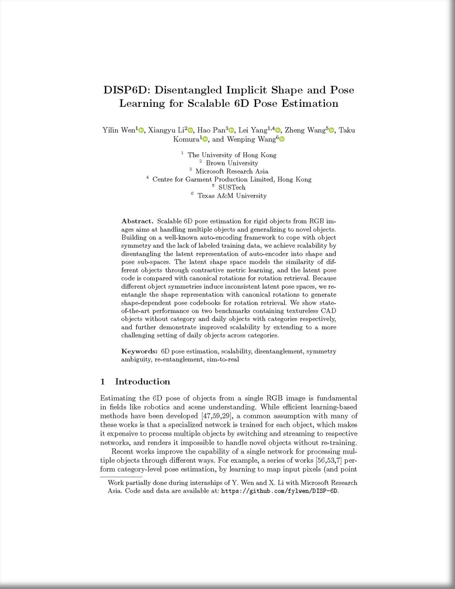

| DISP6D: Disentangled Implicit Shape and Pose Learning for Scalable 6D Pose Estimation |
| Yilin Wen1, Xiangyu Li2, Hao Pan3, Lei Yang1,4, Zheng Wang5, Taku Komura1, Wenping Wang6 |
| 1The University of Hong Kong, 2Brown University, 3Microsoft Research Asia, 4Centre for Garment Production Limited, Hong Kong, 5SUSTech, 6Texas A&M University |
| ECCV 2022 |
| |
| Abstract |
|
Scalable 6D pose estimation for rigid objects from RGB images aims at handling multiple objects and generalizing to novel objects. Building on a well-known auto-encoding framework to cope with object symmetry and the lack of labeled training data, we achieve scalability by disentangling the latent representation of auto-encoder into shape and pose sub-spaces. The latent shape space models the similarity of different objects through contrastive metric learning, and the latent pose code is compared with canonical rotations for rotation retrieval. Because different object symmetries induce inconsistent latent pose spaces, we re-entangle the shape representation with canonical rotations to generate shape-dependent pose codebooks for rotation retrieval. We show state-of-the-art performance on two benchmarks containing textureless CAD objects without category and daily objects with categories respectively, and further demonstrate improved scalability by extending to a more challenging setting of daily objects across categories.
|
| Algorithm overview |
 |
|
Disentanglement for pose estimation. Images of objects are mapped to latent representations for object shape and pose, respectively. Due to different object symmetries, query pose codes must refer to object-specific pose codebooks (symmetries marked by code color) for rotation retrieval, which are generated by re-entangling canonical rotations with object shapes.
|
 |
|
Network structures in the training (left) and testing stage (right) for different settings. If testing objects have available 3D models (or not), we train an RGB decoder only (or plus a depth decoder) (left). During test stage, object rotation is purely RGB-based estimation by retrieving from the pose codebook, which is constructed by encoding the given object views (top right), or by shape code conditioned generation (bottom right). Translation is computed by pinhole camera (top right) or by depth comparison (bottom right).
|
| |
|  |
|
Preprint and Supplemental [PDF]
Code and Data [Link]
Poster [Link]
Presentation Video [Link]
Citation
Wen, Y., Li, X., Pan, H., Yang, L., Wang, Z., Komura, T., & Wang, W. (2022, November). DISP6D: Disentangled Implicit Shape and Pose Learning for Scalable 6D Pose Estimation. In Computer Vision–ECCV 2022: 17th European Conference, Tel Aviv, Israel, October 23–27, 2022, Proceedings, Part IX (pp. 404-421). Cham: Springer Nature Switzerland.
(bibtex)
|
|
| |
| |
| ©Y. Wen. Last update: Oct, 2022. |